La empatía dejó de ser un concepto abstracto

La empatía dejó de ser un concepto abstracto

Mil años en el futuro surge el universo de Connexus, un ecosistema inteligente y vivo que necesita alimentarse de la energía emocional humana para sobrevivir y a cambio de esta ofrenda cruda, la red provee recursos vitales a la comunidad.
En este nuevo universo, la humanidad no solo se adaptó a su entorno, sino que se fusionó con él, creando una profunda interdependencia simbiótica. La brecha que antes separaba a las personas de la naturaleza desapareció. También sentimos de manera directa las emociones de quienes nos rodean, del mismo modo que ellos pueden percibir las nuestras. En Connexus vivimos en una red viva y consciente donde cada pensamiento, sentimiento y latido resuena en comunidad.
Esta profunda sensibilidad transformó nuestra relación con el planeta en un ciclo de reciprocidad energética. Todo lo que tomamos de la Tierra nos comprometemos a devolverlo.